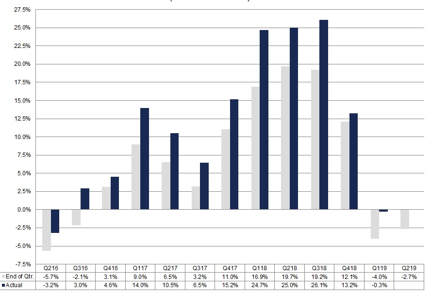

Resultados en los últimos trimestres
Historia de la empresa X
En un giro inesperado del destino empresarial, la empresa simplemente llamada "X" ha emergido como un fenómeno en la escena tecnológica global. Fundada por un grupo ecléctico de visionarios apasionados por la innovación y la tecnología, X ha logrado un éxito sin precedentes en los últimos trimestres.
La compañía X se lanzó con un enfoque en la fusión de tecnologías avanzadas, incluyendo la computación cuántica y la inteligencia artificial. Su primer producto, QuantumMind, rompió barreras y estableció nuevos estándares en el análisis de datos y el procesamiento de información.
Desde su lanzamiento, X ha experimentado un crecimiento constante en sus ingresos trimestrales, superando las expectativas del mercado. QuantumMind ha sido adoptado en diversas industrias, desde finanzas hasta investigación científica, ofreciendo una ventaja significativa en términos de velocidad y precisión.
El último trimestre fue especialmente destacado para X, ya que la empresa expandió su cartera de productos con el lanzamiento de QuantumVision, una plataforma de inteligencia artificial avanzada que utiliza la tecnología cuántica para mejorar la visión por computadora y la interpretación de imágenes.
Además, X ha establecido asociaciones estratégicas con líderes de la industria, consolidando su posición como un jugador clave en la convergencia tecnológica. La comunidad empresarial ha observado con atención el ascenso de X, con un aumento constante en el valor de sus acciones y un interés creciente de inversores y colaboradores potenciales.
La historia de éxito de X no solo radica en sus productos innovadores, sino también en su capacidad para anticipar y abordar las demandas cambiantes del mercado. Como resultado, X se ha convertido en un nombre sinónimo de vanguardia tecnológica y ha demostrado que, a veces, un simple "X" puede marcar la diferencia en el mundo empresarial.
Encuesta de aceptación
Nos gustaría saber la opinión de nuestros lectores